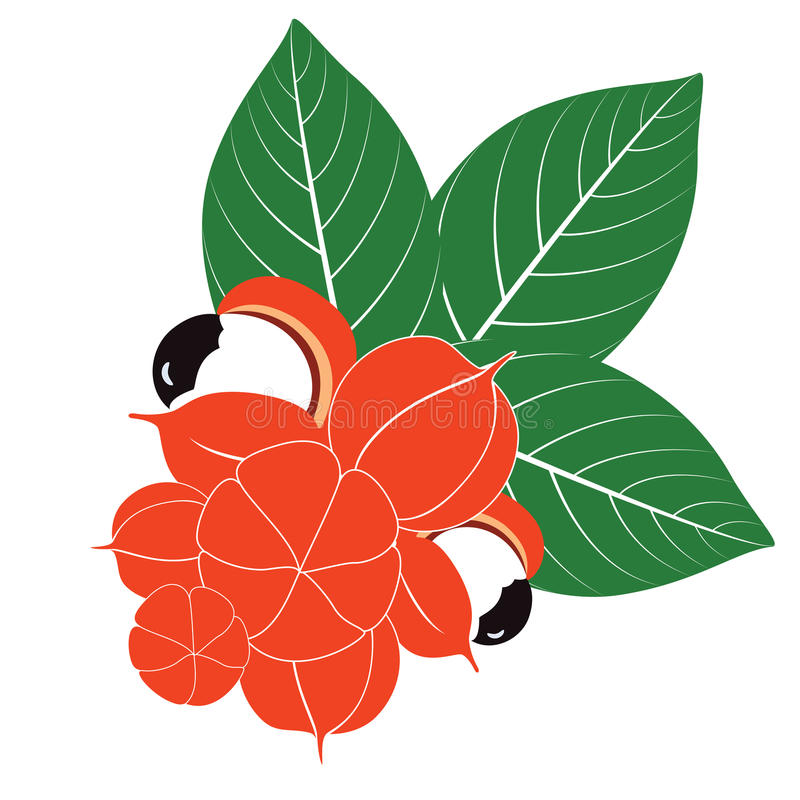

Trabalho Kurumí Guaré no Coração da Amazônia
Yaguarê Yamã
Eu tento lutar da melhor maneira possível para nos manter vivos. Fala Yaguarê Yamã é um escritor, geógrafo, ilustrador e líder indígena nascido no Amazonas. Militante no movimento indígena, luta pela demarcação das terras de seu povo, pela conscientização dos ribeirinhos e pela inclusão dos indígenas na sociedade brasileira. É autor de 25 livros para públicos diversos e é vice-presidente do Instituto “Wewaa”, com sede em Manaus , nascido em 3 de outubro de 1973 ( 47 anos ).
O mais novo da turma
A pessoa que vem por último tem quase noventa por cento de chance de escapar de um acidente com cobra venenosa . Em minha vida de aventureiro mirim , aprendi que o último quase sempre é o primeiro . Por isso digo que o privilégio ser o último e de maneira nenhuma é desconforto .
Vivendo a tradição
Quando o autor do livro era criança seu pai toda noite contava histórias para todas crianças da aldeia e eram histórias assustadoras , quando ele terminava de contar todos ficavam com medo de ir para a casa na escuridão então iam juntos um olhando a frente e o outro atrás e esse não era o pior o pior era a parte que as mães obrigavam os filhos irem no terreiro urinar para não urinarem na rede e quando não estavam com vontade eles demoravam bastante.
Uma cobra grande no porto de casa:
As cobras têm lugar importante na cultura de meu povo . Aqui na Amazônia , vive a maior serpente do mundo , a temida ´´çukurijú´´.Cresce tão grande , torna-se tão forte que seu tamanho máximo até hoje ninguém sabe . As ´´çukurijú´´ têm o respeito de todos os animais da floresta , eu vi aos sete anos uma dessa lá no porto de casa.
Olhando visajes:
“É fácil desmentir quando não se conhece e duvidar do que ainda não viu”
“As florestas, que eram casa das entidades, foram derrubadas e causavam a fuga desses seres. Assim, quanto mais o homem moderno se aproxima e a urbanização se expande, comprimindo a floresta, mais esse seres desaparecem e seus sobreviventes, em fuga, passam a viver confinados em seus últimos refúgios. Se eles desaparecem, é porque são entidades naturais e não sobrevivem em meio urbano.”
História de boto :
“Numa vez fomos visitar nosso tio que morava a uns dez quilômetros, cerca de quatro horas de viagem pelo Urariá.”
Neste capítulo autor “saiu de casa” e foi visitar um lugar cheio de botos!
Onde um pescador pescou um boto, mas mesmo assim, não o comeram, por dó.
Brancos , barcos e cidades:
Os brancos iam pouco na aldeia naquela época mas quando iam eles nos ensinavam português e a religião deles , um dia o autor e seu primo viram uma lancha que parecia um espelho , quando viram aquilo ficaram sem palavras e pensaram que era o diabo , depois foram correndo igual doidos para a vila , no outro dia eles foram para a cidade de Nova Olinda pela primeira vez.
Ritual da tukãdera:
Nessa parte do livro o autor ia passar pelo ritual da tukandeira que era a fase de virar adulto na cultura deles , o autor queria impressionar uma menina que ele estava apaixonado , então ele tinha o dever de passar e assim fez de primeira ele conseguiu passar pelo ritual da tukandeira.
Quando perdi meu irmãozinho:
O irmão do autor morreu em uma noite , por uma doença . Ele se assustou com o vidro que se quebrou e pulou da rede e nesse instante começou a tremer e espumar pela boca . As mulheres da vizinhança preocupadas , faziam remédios de todos os tipos e de todos os vegetais conhecidos.
Adeus ao meu mundo encantado:
A notícia que o pai do autor lhe deu que iriam mudar foi desesperadora , estava me despedindo das aventuras e histórias que tinha naquele lugar. A saudade iria brotar a cada instante que olhasse um rio passar em frente de uma floresta . Saudade na minha língua se chama Çunarýa.
Um pouco sobre o meu povo:
Os Maranguá habitavam a região dos rios Mamurú e Abacaxis . Ao serem expulsos do seu território tradicional , miscigenaram-se aos Sataré-mawé ou incorporaram-se a eles e à população ribeirinha . O povo Maraguá está organizado em seis clãs tradicionais: Tawató, Aripunã , Piraké , Yaguaretê e Piragá.
A batalha da cachoeira do cipó
Vera Val (autora)
A escritora Vera do Val é paulista e foi graduada na faculdade de Filosofia, Ciências e Letras da USP de Ribeirão Preto. Ela se mudou para Manaus, no Amazonas em 2002 quando começou a escrever livros.
Vera ganhou o Prêmio Jabuti- Categoria Conto e Crônica- em 2008 pela obra “Histórias do rio Negro” e o Prémio Literário Cidade de Manaus de 2007 com o mesmo título, na época ela já tinha escrito vários livros infanto-juvenis e adultos.
Seus contos são marcados pela presença de personagens femininos comoventes “... mulheres simples, mas jamais simplórias, com a esperteza que a vida lhes dá e na luta pela conquista acabam por ser sobreviventes. Sempre altivas, no comando da ação.”- Diz a autora.
Vera do Val é autora de diversas obras, como:
Histórias do Rio Negro (já citado antes), O imaginário da floresta: lendas e histórias da Amazônia, Histórias de bichos brasileiros: folclore brasileiro, Histórias da onça e do macaco: folclore brasileiro, A criação do mundo e outras lendas da Amazônia.
A seguir, capas de algumas de suas obras:
As luzes
Kaó vê várias luzes verdes indo de um lado para o outro do rio e elas vão aumentando então decide chamar seu melhor amigo Apiraí então eles acham que eram xapiripês então eles decidiram que para eles investigarem eles foram até o outro lado do rio e ficaram chocados com o que viram…
Os xapiripês
Sim eles viram os xapiripês mas não só eles como todos os animais e parecias ser uma reunião mas minutos depois quem saiu do rio foi o Boto e a Iara e não somente isso os animais também falavam nas o xapiripê-chefe parecia preocupado então ele foi falar e o que ele falou preocupou os animais de mais ele falou que os madeireiros estavam invadindo e destruindo a floresta foi uma bela bagunça e um tanto de animais passaram mal esses madeireiros estavam fora da lei pois uma lei protegia o lugar e quando o xapiripê-chefe falou das destruições causadas pelos madeireiros Kaó fica nervoso e dá um berro e um pulo e os animais ficaram assustados mas o papagaio de Apiraí que tinha ido com eles salvou-os falando que eles estavam ali pra ajudar então os animais se acalmaram e pediram ajuda para eles e eles aceitaram ajudar.
Preparativos
Os animais junto com Kaó e Apiraí começaram a bolar planos e preparativos para enfrentar os madeireiros.
A batalha
se organizaram rapidamente os xapiripês ficaram invisíveis e foram vasculhar os madeireiros e voltaram e deram as informações e os animais atacaram mas não mataram ninguém os homens saíram correndo com suas ferramentas e máquinas com muito medo.
Após uma longa despedida os meninos e o papagaio deram abraços em todos e prometeram ir visitá-los e os garotos foram pra casa …
O julgamento
Apiraí e Kaó após derrotarem os madeireiros com a ajuda dos animais ganharam muitos presentes, e uma recompensa que investiram na escola, houve uma festa para comemorar o acontecido. Apiraí comeu muito e acabou passando mal, o médico o receitou para ele óleo de rícino, era um remédio muito ruim. Logo que melhorou Apiraí tratou de despejar o restante no rio para não correr o risco de ter que tomar novamente aquele horrível remédio.
Os dois também ganharam de presente uma caixinha de pesca, com anzóis, carretéis de linha, chumbinho, tudo que um pescador branco usa para pegar peixes. Esconderam da mãe de Kaó aquele presente, pois sabiam que ela não iria gostar, pois os índios pescam com azagaia, onde lutam com o peixe e vence o mais rápido. Enganar os peixes pescando com anzol é errado.
Apiraí, kaó e o papagaio Croc foram pescar e usaram os anzóis, como não sabiam pescar direito os peixes escaparam, ficando feridos. A cidade debaixo d’água os condenaram e eles foram puxados até o fundo do rio por um grande peixe para serem julgados pelos seus crimes. Eles ficaram confusos com tudo o que estava acontecendo, não estavam entendendo porque estavam ali e o que tinham feito de mal. Foi então que apareceu uma tartaruga de óculos dizendo ser advogada deles e explicou tudo, que as suas atitudes tinham prejudicado os peixes, e estavam sendo condenados por sujar a água e pescar com anzol.
Apiraí e Kaó explicaram que não eram más pessoas e entenderam que prejudicaram os peixes porém não foi intencional, disseram também que conheciam a Iara rainha das águas e o Boto cor de rosa e que eles eram seus amigos e podiam comprovar que não eram pessoas más. A doutora tartaruga ficou surpresa e mandou o peixe mais rápido do rio encontrar os dois, pois poderia ajudar na defesa.
No julgamento estavam presentes muitos peixes, indignados e revoltados com a atitude dos dois índios. As vítimas contaram para o juiz o que tinha acontecido com elas e a cada depoimento Apiraí e Kaó ficavam mais tristes pois tinham prejudicados muitos peixes. Eles se sentiam culpados e muito arrependidos pelos feitos. Ao jogar o óleo de rício no rio os peixes foram intoxicados e ao pescar com anzóis muitos peixes foram feridos e estavam com os anzóis ainda presos neles, sentido muita dor.
Quando o juiz estava preste a acusá-los Iara e o Boto apareceram e intercederam por eles, contaram o que aconteceu na batalha da cachoeira e como eles foram importantes para vencer os madeireiros. Iara e o Boto escutaram as acusações contra Apiraí e Kaó, concordando que a atitude dos dois não foi adequada, mas também não foi intencional. O juiz então os condenou a uma semana de trabalho de limpeza no fundo do rio.
Assim eles fizeram o trabalho de limpeza e Apiraí ainda ajudou os peixes feridos com medicamentos que o pajé o ensinou a fazer com plantas medicinais.
Lendas Amazônicas
Boto-Rosa: De acordo com a lenda, um boto cor-de-rosa sai dos rios nas primeiras horas das noites de festa e com um poder especial, transforma-se em um lindo jovem vestido com roupas brancas.
Ele usa um chapéu branco para encobrir o rosto e disfarçar o nariz grande. Nas festas, com seu jeito galanteador e falante, o boto dança, bebe, se comporta como um rapaz normal e aproxima-se das jovens solteiras, seduzindo-as.
Logo após, nas primeiras horas das noites de festa, consegue convencer as mulheres para um passeio no fundo do rio, local onde costuma engravidá-las. Na manhã seguinte volta a se transformar no boto, pois o seu encantamento só acontece à noite.
A lenda do Boto cor-de-rosa, ou simplesmente a lenda do Boto, é uma lenda de origem indígena que faz parte do folclore brasileiro. Ela surge na região amazônica, no Norte do País.
Reza a lenda que o boto cor-de-rosa, animal inteligente e semelhante ao golfinho que vive nas águas amazônicas, se transforma num jovem belo e elegante nas noites de lua cheia.
A lenda do boto é uma lenda da Região Norte do Brasil, geralmente contada para justificar a gravidez de uma mulher solteira.
Os botos são carnívoros cetáceos que vivem nos rios amazônicos. Dizem que, durante as festas juninas, o boto rosado aparece.
Esse rapaz seduz as moças desacompanhadas, levando-as para o fundo do rio e, em alguns casos, as engravidando. Por essa razão, quando um rapaz desconhecido aparece em uma festa usando chapéu, pede-se que ele o tire para garantir que não seja um boto. Daí deriva o costume de dizer, quando uma mulher tem um filho de um pai desconhecido, que ele é "filho do boto".
Créditos:https://www.todamateria.com.br/lenda-do-boto/
Guaraná: A lenda do Guaraná tem origem na região norte do Brasil e é uma das mais populares do nosso folclore.
O Guaraná é um fruto originário da Amazônia. Segundo a lenda folclórica da região ele é originalmente os olhos de um indiozinho que foi mordido por uma serpente quando estava apanhando frutos na floresta.
Tudo aconteceu quando um casal de índios que não tinham filhos pediu ao Deus Tupã que tornasse possível o desejo se serem país.
O pedido foi atendido e o casal teve um menino muito bonito e saudável que era estimado em toda tribo, o que levava a crer que no futuro seria um grande chefe guerreiro.
Invejoso de suas qualidades, Jurupari, o Deus da escuridão, resolveu matar o indiozinho. Um dia, enquanto o menino estava distraído colhendo frutinhas da floresta, Jurupari se transformou em serpente, atacou e matou a pobre criança
Tupã mandou trovões ensurdecedor alertando os pais do perigo que o menino corria, mas não houve tempo até que a serpente matasse o menino com o seu veneno.
Assim, Tupã mandou plantar os olhos da criança para que deles nascesse uma planta. O fruto dessa planta deveria ser dado para as pessoas com o objetivo de lhes dar a energia.
No local onde os olhos foram plantados nasceu o Guaraná, frutinha que apresenta o aspecto de olhos.

Créditos:Dremstime
Curupira: Curupira é um ser místico mais conhecido como um guardião da floresta e por dar uma lição em caçadores ou qualquer ser humano que fosse destruir a floresta.
Originado no folclore brasileiro com as seguintes características: cabelo vermelho ou laranja, calcanhares para frente e pés para trás. Existem várias versões do Curupira, em vários lugares, mas em todos os lugares as pessoas acreditam que a força física que ele tem é sobrenatural pelo personagem ser quase um anão.
A lenda citada aterrorizava os indígenas e por conta disso, preferiram previnir sua paz com presentes para ele.

Créditos:Wikimedia Commons
Festas da Amazônia
Existem vários tipos de festas na Amazônia de culturas, religiões etc...
E essas são : Ciranda, Boi-bumbá, Cacetinho, Dança Internacional, Garrote e Quadrilha são algumas das 17 categorias que integram o Festival Folclórico do Amazonas, evento realizado no formato de arraial, com barracas e comidas típicas das festas juninas, combinadas à apresentação de, aproximadamente, 100 grupos de folclore.
Manifestação que exalta os valores, crenças e costumes amazonenses, tanto da capital quanto do interior, sob a influência e características das culturas portuguesa, indígena e nordestina, o Festival Folclórico acontece desde 1956.
A disputa leva, em média, 160 mil espectadores por ano ao Centro Cultural dos Povos da Amazônia (CCPA), localizado na zona sul de Manaus. O espaço dispõe de uma arena, onde cerca de 11,8 mil brincantes se apresentam todos os anos.
Ciranda
É uma dança típica das praias que começou a aparecer no litoral norte de Pernambuco. Uma das cirandeiras mais conhecidas é a Lia de Itamaracá. Surgiu também, simultaneamente, em áreas do interior da Zona da Mata Norte do Estado. É muito comum no Brasil definir ciranda como uma brincadeira de roda infantil, porém na região Nordeste e, principalmente, em Pernambuco ela é conhecida como uma dança de rodas de adultos. Os participantes podem ser de várias faixas etárias, não havendo impedimentos para a participação de crianças também.
A ciranda, assim como o coco em Pernambuco, era mais dançada nas pontas-de-rua e nos terreiros de casas de trabalhadores rurais, partindo depois para praças, avenidas, ruas, residências, clubes sociais, bares, restaurantes. Em alguns desses lugares passou a ser um produto de consumo para turistas.
Festival Folclórico
O Festival de Parintins é uma festa popular realizada anualmente no último fim de semana de junho na cidade de Parintins, Amazonas. O festival é uma apresentação a céu aberto de diversas associações folclóricas, sendo o ponto mais importante do evento atualmente é a disputa entre dois bois folclóricos, o Boi Garantido, de cor vermelha, e o Boi Caprichoso, de cor azul. A apresentação ocorre no Bumbódromo.
O Festival Folclórico de Parintins existe desde de 1914, foi oficializado em 1966, ganhou a mídia a partir dos anos 90. Neste evento o fio condutor das apresentações é a lenda de Pai Francisco e Mãe Catirina que contam com o auxílio do pajé para ressuscitar o boi do patrão.
Créditos:Wikimedia Commons
Boi-bumbá
Bumba meu boi ou boi-bumbá é uma festa do folclore popular brasileiro, com personagens humanos e animais fantásticos, que gira em torno de uma lenda sobre a morte e ressurreição de um boi.
Festa do Pirarucu
A festa do Pirarucu é realizada no último dia de novembro até o dia 3 de dezembro, quando se comemora a despesca anual do peixe, e reune todas as comunidades envolvidas em uma ação de manejo sustentável. O início da festa também marca a abertura dos Festejos da padroeira Nossa Senhora de Guadalupe, que se encerra no dia 12.
A Festa do Pirarucu surgiu em razão do município de Fonte Boa ser um dos maiores produtores de pirarucu do Amazonas e principalmente do Brasil. A atividade tem controle do Instituto de Desenvolvimento Sustentável de Fonte Boa (IDSFB).No município existe uma estimativa de captura de cerca de 25 mil peixes adultos, o que significa mil toneladas do produto.
Quadrilha
A quadrilha é uma tradicional dança que ocorre, predominantemente, nos festejos juninos com a participação de muitos dançarinos quadrilheiros e um narrador.
Quem é brasileiro certamente já viu uma apresentação de quadrilha na vida, presencialmente ou através da televisão. E quem as viu ao vivo sabe que o momento de maior efervescência cultural das quadrilhas é nas cidades do interior da região nordeste. Por conta disso, as apresentações fazem referências à cultura nordestina, como a caracterização do homem do campo, do matuto e do caipira.
Créditos: Pixbay